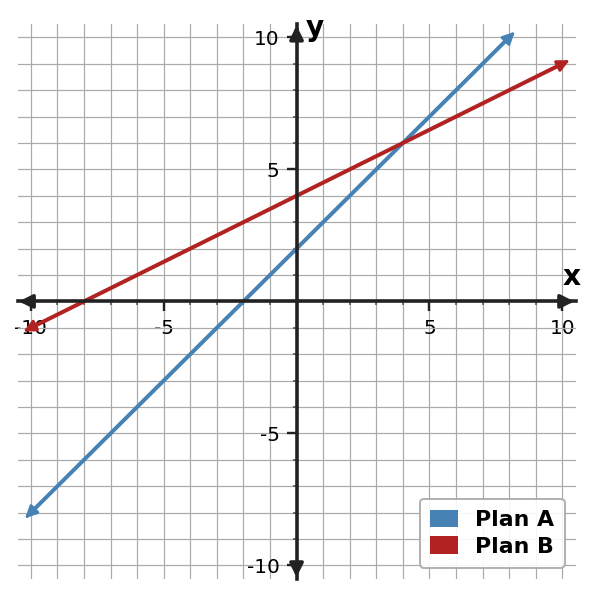

1. Using $x$ for large candles and $y$ for small candles, solve $x+y=13$ and $8x+5y=80$. Interpret both coordinates in context.
2. Before solving $x+y=16$ and $9x+4y=99$ for large posters and small posters, explain what each coordinate of the ordered-pair solution will represent.
3. The table lists combinations of meal vouchers and drink vouchers that meet one total-item constraint. Describe the relationship and write the count equation.
| x = meal vouchers | y = drink vouchers |
|---|---|
| 0 | 29 |
| 7 | 22 |
| 14 | 15 |
4. A group sells premium passes for 12 dollars each and regular passes for 7 dollars each. It sold 20 items for 180 dollars total. A candidate solution is $(8,12)$. What checks confirm that this solution is reasonable in context?
5. Two cost plans are graphed. Estimate the break-even point and explain what it means in the situation.

6. Using $x$ for adult tickets and $y$ for student tickets, solve $x+y=22$ and $9x+6y=162$. Interpret both coordinates in context.
7. Using $x$ for large boxes and $y$ for small boxes, solve $x+y=20$ and $7x+3y=92$. Interpret both coordinates in context.
8. Before solving $x+y=18$ and $12x+7y=151$ for premium passes and regular passes, explain what each coordinate of the solution will represent.
9. The table lists combinations of notebooks and pens that meet one total-item constraint. Describe the relationship and write the count equation.
| x = notebooks | y = pens |
|---|---|
| 0 | 19 |
| 4 | 15 |
| 9 | 10 |
10. A group sells museum tickets for 15 dollars each and student tickets for 9 dollars each. It sold 16 items for 186 dollars total. A candidate solution is $(7,9)$. What checks confirm that this solution is reasonable in context?
11. A group sells team shirts for 14 dollars each and caps for 6 dollars each. They sell 12 items for 104 dollars. Define variables and write a system that models the situation.
12. Using $x$ for team shirts and $y$ for caps, solve $x+y=18$ and $14x+6y=196$. Interpret both coordinates in context.
13. Using $x$ for large boxes and $y$ for small boxes, solve $x+y=19$ and $8x+3y=82$. Interpret both coordinates in context.
14. Before solving $x+y=7$ and $12x+7y=64$ for premium passes and regular passes, explain what each coordinate of the ordered-pair solution will represent.
15. The table lists combinations of notebooks and pens that meet the total-item constraint. Describe the relationship and write the count equation.
| x = notebooks | y = pens |
|---|---|
| 0 | 21 |
| 5 | 16 |
| 10 | 11 |
16. What evidence would confirm that $(5,13)$ is reasonable for a total of 18 items and 151 dollars?
17. A group sells large posters for 9 dollars each and small posters for 4 dollars each. They sell 13 items for 77 dollars. Define variables and write a system that models the situation.
18. Using $x$ for day passes and $y$ for evening passes, solve $x+y=26$ and $13x+9y=282$. Interpret both coordinates in context.
19. Using $x$ for notebooks and $y$ for pens, solve $x+y=21$ and $5x+2y=63$. Interpret both coordinates in context.
20. Before solving $x+y=22$ and $5x+2y=80$ for notebooks and pens, explain what each coordinate of the ordered-pair solution will represent.
21. The table lists combinations of large candles and small candles that meet the total-item constraint. Describe the relationship and write the count equation.
| x = large candles | y = small candles |
|---|---|
| 0 | 24 |
| 6 | 18 |
| 12 | 12 |
22. A group sells large boxes for 7 dollars each and small boxes for 3 dollars each. It sold 14 items for 62 dollars total. A candidate solution is $(5,9)$. What checks confirm that this solution is reasonable in context?
23. A group sells notebooks for 5 dollars each and pens for 2 dollars each. They sell 21 items for 63 dollars. Define variables and write a system that models the situation.
24. Using $x$ for shirts and $y$ for hats, solve $x+y=25$ and $14x+8y=266$. Interpret both coordinates in context.